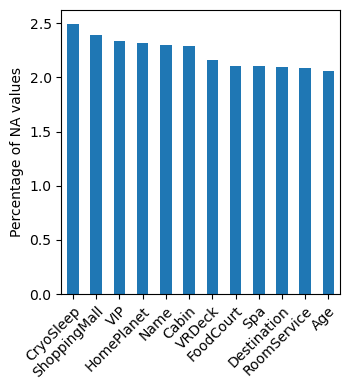
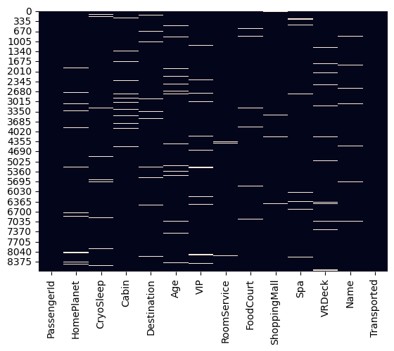
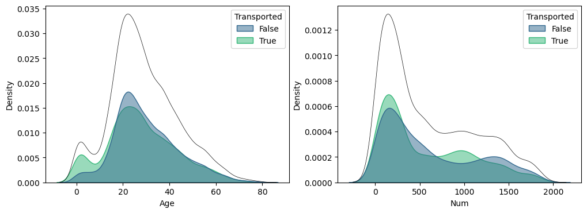
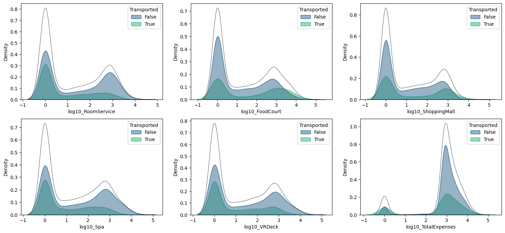
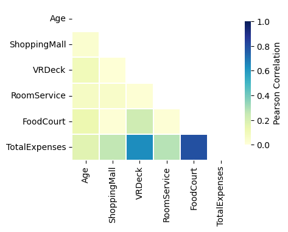
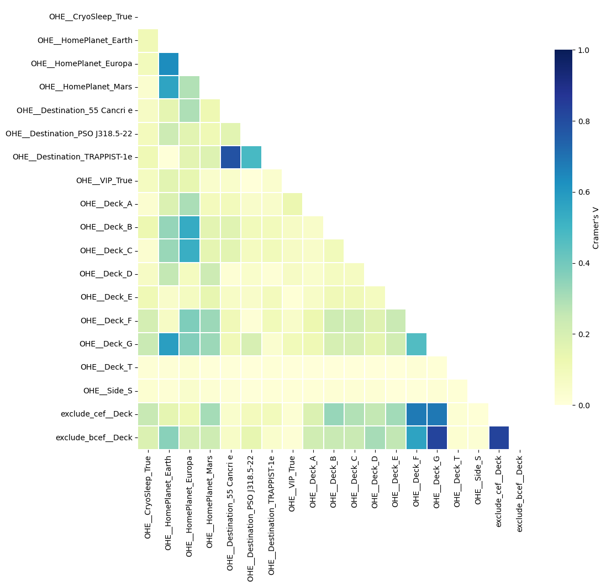
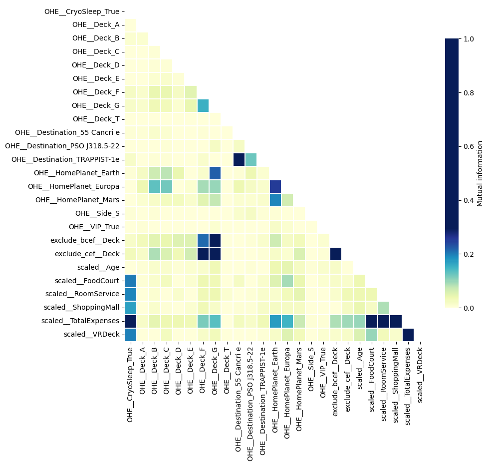

Spaceship Titanic
Objective
Kaggle competition where the goal is to predict whether a passenger was transported to an alternate dimension during the Spaceship Titanic’s collision with the spacetime anomaly. To help you make these predictions, you’re given a set of personal records recovered from the ship’s damaged computer system.
Exploratory data analysis
Data contained 8,693 samples and 14 features. Transported feature was considered as target.
There were 219 duplicated Names entries, although no PassengerId values were duplicated. Therefore, the dataset was assumed to be free of actual duplicates.
Missing values were found in all features except Transported and PassengerId (Figure 1). The percentages of missing values was around 2.0-2.5% and showed a random distribution (Figure 2). The percentage of samples without missing values was 76%.

Target feature.
The Transported feature had the following distribution:
- True: 4378 samples.
- False: 4315 samples.
This indicates a well-balanced distribution between the two classes.
Features for prediction.
Some features had to be processed in a initial transformation step. The Cabin feature was splitted into three features: Deck, Num and Side, and the Name feature was splitted into FirstName and Surname.
Continuous quantitative
First, Age and Num features were analyzed and distributions are shown in Figure 3. The Age feature exhibits a bimodal distribution, with a small peak for very young children and a larger, more prominent peak for individuals in their early twenties. Plot suggests that younger passengers might have a lower probability of being transported. The Num feature’s distribution is right-skewed, indicating that most samples have low values for this feature. There appears to be an inverse relationship with the target: lower values for Num seem to correlate with a higher probability of being transported, while higher values correlate with a lower probability.

Additionally, we analyzed the expense-related features. Passengers with CryoSleep set to True were excluded from this analysis, as they incurred no expenses. For improved visualization, these features were transformed using a logarithmic scale (Figure 4)
After the transformation, all expense features exhibited a bimodal distribution, with a primary peak at the lower end and a secondary peak around a log-scale value of three. The TotalExpenses feature was the exception; while it also showed a bimodal pattern, its more prominent peak was the one centered at the higher value.
Passengers who spent more on RoomService, Spa, and VRDeck had a lower probability of being transported. This suggests a negative correlation between spending on these luxury services and the transportation outcome.

Categorical
The distributions for the categorical features are shown in Figure 5. Most features have a clear majority class; for example, Earth is the most common HomePlanet, and TRAPPIST-1e is the most frequent Destination. For the Deck feature, decks F and G are the most populated.
A strong relationship with the outcome is also evident. Passengers in CryoSleep are significantly more likely to be transported. A similar positive correlation is observed for passengers on decks B and C, who also have a higher transportation rate.
The Name and Surname features contain 2,707 and 2,218 unique values, respectively.

Feature enginering
In this step, the features were prepared for model input by applying missing value imputation, scaling, and encoding. For numerical features, the median was used for imputation, while the most frequent value was used for categorical features. Expense-related features were imputed with zero for passengers in CryoSleep. Additionally, new features were engineered. For instance, TotalExpenses was created by summing all expense-related features. Other features were derived from the Deck feature by grouping some of its classes.
Finally, 25 features were prepared for predictive power analysis and optimal feature selection.
Predictive power of each feature
Mutual information analysis of the features (Figure 6) shows that expense-related features and CryoSleep have the most significant predictive power. They are followed by features created by one hot enconding from HomePlanet, Deck, and Destination.

To analyze the relationships between numerical features, a Pearson correlation matrix was computed (Figure 7). High correlations were observed between TotalExpenses and the individual expense-related features. The strongest of these correlations were with FoodCourt and VRDeck.

A similar analysis was conducted for categorical features using Cramer’s V to evaluate their associations (Figure 8). The strongest relationships were observed among features derived from the same source variable, such as those based on Destination, HomePlanet, and Deck.

Finally, mutual information between all the features was calculated (Figure 9). Same strong relationships mentioned above were observed, being clearer the relationship between TotalExpenses and the individual expense-related features. a new strong relationship was observed between CryoSleep and TotalExpenses.

Optimal subset of features.
From the initial set of twenty-five features, an optimal subset was identified using a genetic algorithm. A linear regression model was employed to evaluate each candidate subset, and the process concluded with the selection of fifteen features.